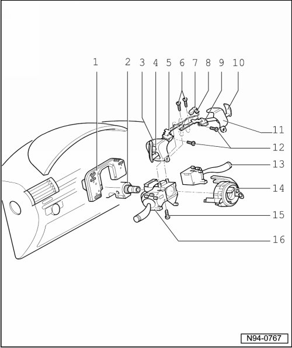

Steering Column Switch Assembly Overview
Steering Column Switch Assembly Overview
• The following components of the steering column switch cannot be disassembled:
• Left trim of steering column switch (Item 3)
• Steering Wheel Tiptronic Switch -E389- at left (Item 4)
• Bracket (Item 5)
• Bracket (Item 7)
• Multi-pin harness connector for Steering Wheel Tiptronic Switch (E389)(Item 8)
• Bracket (Item 9)
• Steering Wheel Tiptronic Switch (E389) at right (Item 10)
• Right trim of steering column switch (Item 11)

- Tightening specifications --> [ Steering Column Switch ] [1][2]Combination Switch
• Also, if only one individual component of steering column switch is removed or replaced, the sequence as described in --> [ Steering Column Switch ] Steering Column Switch must always be followed.
1 - Steering Column Electronic Systems Control Module (J527)
• Removing and installing --> [ Steering Column Switch ] Steering Column Switch
• Coding --> [ Steering Column Electronic Systems Control Module, Coding ] Programming and Relearning
• Output Diagnostic Test Mode (DTM) --> [ Steering Column Electronic Systems Control Module, Output Diagnostic
Test Mode ] Initial Inspection and Diagnostic Overview
• Multi-pin connector assignment--> [ Steering Column Switch Connector Assignments ] [1][2]Combination Switch
2 - Steering Column
3 - Left trim of steering column switch
• On Steering Wheel Tiptronic Switch (E389) at left
4 - Steering Wheel Tiptronic Switch (E389) at left
• Removing and installing --> [ Steering Column Switch ] Steering Column Switch
• Multi-pin connector assignment--> [ Steering Column Switch Connector Assignments ] [1][2]Combination Switch
5 - Bracket
• On Steering Wheel Tiptronic Switch (E389) at left
6 - Torx bolt
• For mounting Steering Wheel Tiptronic Switch (E389) at left and right sides
7 - Bracket
• For multi-pin harness connectors of Steering Wheel Tiptronic Switch (E389), Airbag Spiral Spring/Return Spring With Slip Ring (F138) and Steering Angle Sensor (G85)
8 - Multi-pin harness connector Steering Wheel Tiptronic Switch (E389)
• Multi-pin connector assignment--> [ Steering Column Switch Connector Assignments ] [1][2]Combination Switch
9 - Bracket
• at steering wheel tiptronic switch (E389), right
10 - Steering Wheel Tiptronic Switch (E389) at right
• Removing and installing --> [ Steering Column Switch ] Steering Column Switch
• Multi-pin connector assignment--> [ Steering Column Switch Connector Assignments ] [1][2]Combination Switch
11 - Right trim of steering column switch
12 - Torx bolt
• For mounting Steering Wheel Tiptronic Switch (E389) at left and right sides
13 - Windshield wiper switch
• Removing and installing --> [ Steering Column Switch ] Steering Column Switch
• "Windshield wiper switch" consists of the components Windshield Wiper/Washer Switch (E22) and Windshield Wiper Intermittent Regulator (E38)
• Multi-pin connector assignment--> [ Steering Column Switch Connector Assignments ] [1][2]Combination Switch
14 - Airbag spiral spring/return spring with slip ring (F138) and steering angle sensor (G85)
• Removing and installing --> [ Steering Column Switch ] Steering Column Switch
15 - Socket head bolt
• for fastening steering column switch
16 - Turn Signal Switch
• Removing and installing --> [ Steering Column Switch ] Steering Column Switch
• depending on equipment, the "turn signal switch" consists of the Turn Signal Switch (E2), Headlamp Dimmer/Flasher Switch (E4), Parking Lamp Switch (E19) and Adaptive Cruise Control Button (E357)
• Multi-pin connector assignment--> [ Steering Column Switch Connector Assignments ] [1][2]Combination Switch